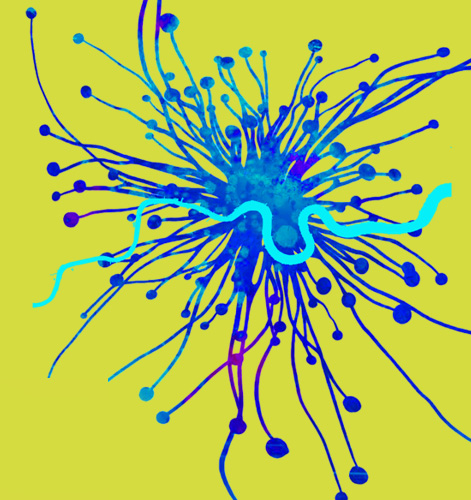

London Permaculture Festival 2026

Storrow
Trefusis
Committee
Butterworth
Karpales
11:30 – 12:30
Going under the microscope with the soil food web — Rebecca Goodall
Storrow Hall
11:45 – 12:45
Introduction to Permaculture — Matt Phillpott
Butterworth Room
11:45 – 12:45
Medicinal forest gardening by design: staying healthy with sustainable plant resources — Anne Stobart
Trefusis Hall
12:00 – 13:00
Sewage down the pan: what happens next? — Julian Doberski
Committee Room
13:00 – 14:00
Introduction to Permaculture — Nat Mady
Butterworth Room
13:00 – 14:00
The SuperSalads Show: daily foraging for our greens — Jo Barker
Storrow Hall
13:10 – 14:10
Composting: going beyond composting our food waste — Susannah Hall
Committee Room
13:10 – 13:50
How to use Natural Dyes: From Kitchen Waste to Cloth — Zoë Burt
Karpales Room
13:10 – 14:10
The Productive Garden — Stephanie Hafferty
Trefusis Hall
14:15 – 14:45
Processing natural fibres: nettle, hemp, flax — Allan Brown
Karpales Room
14:15 – 15:15
The Science of Garden Biodiversity — Julian Doberski
Storrow Hall
14:20 – 15:20
Reusing Greywater — Hugh Livingstone
Committee Room
14:20 – 15:20
Rewilding at all Scales — Nicola Peel
Trefusis Hall
14:30 – 15:30
Campaign for the Right to Grow
Butterworth Room
15:30 – 16:30
Finding Lights in a Dark Age: Sharing Land, Work and Craft — Chris Smaje
Trefusis Hall
15:30 – 16:30
Rain Gardens — Jon Bromwich
Committee Room
15:30 – 16:00
Simple Herbal Remedies — Roisin Reilly
Karpales Room
15:40 – 16:40
Permablitz London — Susannah Hall
Storrow Hall
16:45 – 17:45
An Introduction to Sociocracy — Rakesh Rootsman Rak
Committee Room
16:45 – 17:45
Everyone makes a difference with Permaculture — Andy Goldring
Trefusis Hall
16:45 – 17:15
How to repair and upcycle your denim clothing — Jahmale
Karpales Room
16:50 – 17:50
Introduction to Permaculture: The Garden & Beyond — Rishil Parekh
Butterworth Room
16:50 – 17:50
The wellbeing benefits of keeping chickens or quails — Matt Phillpott
Storrow Hall